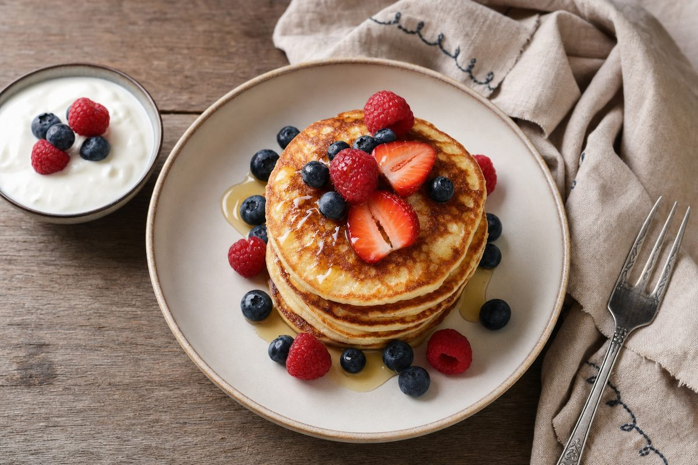
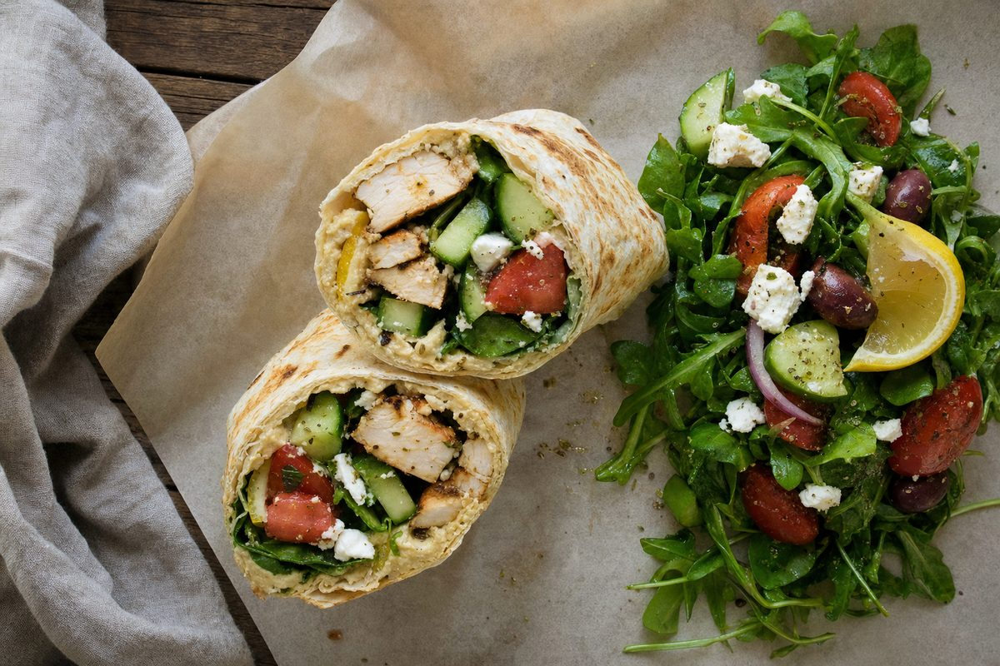
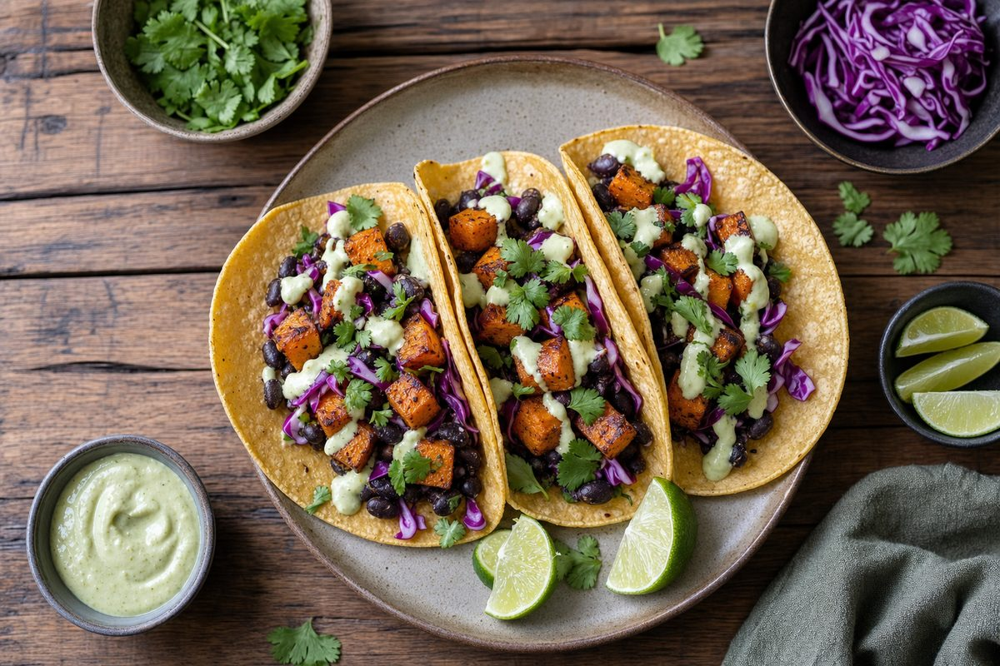
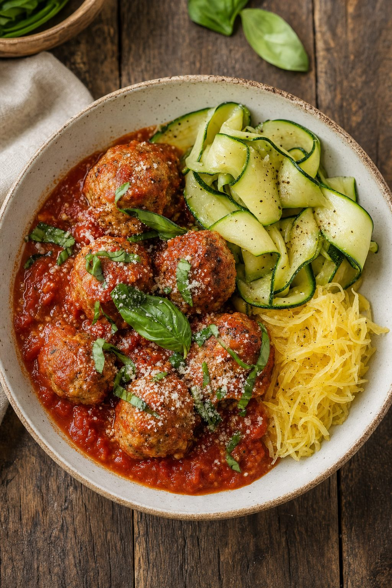

15 min
4 servings

Garlic Butter Chicken Skillet
Tender chicken cutlets seasoned with paprika and thyme, finished with a quick garlic butter honey pan sauce.
Ingredients
- 2 boneless skinless chicken breasts, sliced into 4 cutlets
- 1 tsp kosher salt, 1/2 tsp paprika, 1/2 tsp dried thyme
- 1/4 tsp each garlic powder, onion powder, and black pepper
- 1 tbsp extra-virgin olive oil
- 2 tbsp butter, 3 minced garlic cloves, 1 tsp honey
- 1 tsp Italian seasoning and 1/2 tsp dried parsley
Instructions
- Slice chicken lengthwise into four thin cutlets.
- Mix salt, paprika, thyme, garlic powder, onion powder, and pepper. Season both sides.
- Heat olive oil in a skillet over medium-high. Sear chicken 2 to 3 minutes per side until 165°F.
- Melt butter and stir in garlic, honey, Italian seasoning, and parsley.
- Reduce heat, pour sauce into the skillet, scrape browned bits, return chicken, spoon sauce over top, and serve.
25 min42g protein

Lemon Herb Chicken Bowl
A high-protein bowl with quinoa, broccoli, avocado, and lemon chicken.
Ingredients
- 1 lb chicken breast, 2 cups cooked quinoa, 3 cups broccoli
- 1 avocado, 1 lemon, 1 tbsp olive oil, parsley
- Garlic powder, oregano, salt, pepper
Instructions
- Season chicken with lemon juice, garlic, oregano, salt, and pepper.
- Sear chicken until cooked through, then rest and slice.
- Char broccoli in the same pan with a splash of oil.
- Build bowls with quinoa, broccoli, chicken, avocado, parsley, and lemon.
20 minlow carb

Turkey Taco Lettuce Cups
Lean taco filling served in crisp lettuce with salsa and Greek yogurt.
Ingredients
- 1 lb lean ground turkey, romaine leaves, 1/2 cup salsa
- 1 tsp chili powder, 1 tsp cumin, 1/2 tsp smoked paprika
- Tomatoes, cilantro, lime, 1/4 cup plain Greek yogurt
Instructions
- Brown turkey in a skillet and drain excess liquid.
- Add spices and a splash of water, then simmer until coated.
- Spoon into lettuce leaves and top with salsa, tomatoes, yogurt, cilantro, and lime.
5 minbreakfast

Greek Yogurt Berry Bowl
A fast breakfast with creamy yogurt, berries, chia, granola, and honey.
Ingredients
- 1 1/2 cups nonfat Greek yogurt, 1 cup mixed berries
- 2 tbsp low-sugar granola, 1 tsp chia seeds, 1 tsp honey
Instructions
- Add yogurt to a bowl.
- Top with berries, granola, chia, and honey.
- Serve cold or pack in a jar for meal prep.
22 min40g protein

Salmon Avocado Plate
Seared salmon with avocado, cucumber, asparagus, and lemon dill seasoning.
Ingredients
- 2 salmon fillets, 1 avocado, asparagus, cucumber
- Lemon, dill, garlic powder, salt, pepper, olive oil
Instructions
- Season salmon with salt, pepper, dill, lemon, and garlic powder.
- Sear skin-side down until crisp, then flip until cooked.
- Roast or sauté asparagus and plate with avocado and cucumber.
15 minplant-forward

Chickpea Power Salad
A meal-prep salad with chickpeas, greens, feta, tomatoes, and lemon tahini dressing.
Ingredients
- 1 can chickpeas, 4 cups chopped kale, tomatoes, cucumber
- 2 tbsp feta, 1 tbsp tahini, lemon juice, garlic, water
Instructions
- Massage kale with lemon juice and a pinch of salt.
- Add chickpeas, tomatoes, cucumber, and feta.
- Whisk tahini, lemon, garlic, and water. Toss and serve.
15 min32g protein

Egg-White Breakfast Skillet
A big-volume breakfast with egg whites, peppers, mushrooms, spinach, and feta.
Ingredients
- 1 1/2 cups egg whites, bell pepper, mushrooms, spinach
- 2 tbsp feta, cooking spray, salt, pepper, hot sauce
Instructions
- Sauté peppers and mushrooms until softened.
- Add spinach and cook until wilted.
- Pour in egg whites and stir gently until set. Finish with feta and hot sauce.
18 minone pan

Honey Garlic Shrimp Sheet Pan
Shrimp, zucchini, peppers, and snap peas roasted with a sweet garlic glaze.
Ingredients
- 1 lb shrimp, zucchini, bell pepper, snap peas
- 1 tbsp honey, 2 tbsp low-sodium soy sauce, garlic, ginger
Instructions
- Toss vegetables with half the sauce and roast for 10 minutes.
- Add shrimp and remaining sauce.
- Roast 6 to 8 minutes until shrimp are pink. Serve over rice or greens.
25 minhigh protein

Beef and Broccoli Stir-Fry
Lean beef strips with broccoli in a quick garlic ginger sauce.
Ingredients
- 12 oz lean sirloin, 4 cups broccoli, 1/3 cup low-sodium broth
- Soy sauce, garlic, ginger, cornstarch, sesame oil
Instructions
- Sear sliced beef quickly and remove from pan.
- Steam-sauté broccoli until bright green.
- Add sauce, return beef, and simmer until glossy. Serve with rice or cauliflower rice.
12 minbreakfast

Cottage Cheese Protein Pancakes
Blender pancakes made with oats, eggs, cottage cheese, and cinnamon.
Ingredients
- 1 cup cottage cheese, 2 eggs, 1/2 cup oats
- 1/2 tsp baking powder, cinnamon, vanilla, berries
Instructions
- Blend cottage cheese, eggs, oats, baking powder, cinnamon, and vanilla.
- Cook small pancakes on a nonstick pan.
- Top with berries and a small drizzle of honey.
10 minno cook

Spicy Tuna Rice Bowl
A fast bowl with tuna, rice, cucumber, avocado, sriracha yogurt sauce, and sesame.
Ingredients
- 1 tuna pouch or can, 1 cup cooked rice, cucumber, avocado
- Greek yogurt, sriracha, lime, soy sauce, sesame seeds
Instructions
- Mix tuna with yogurt, sriracha, lime, and soy sauce.
- Add rice to a bowl and top with tuna, cucumber, avocado, and sesame.
- Add extra greens for more volume.
20 minwrap

Mediterranean Chicken Wrap
Grilled chicken, hummus, cucumber, tomato, feta, and greens in a high-fiber wrap.
Ingredients
- Cooked chicken breast, whole-wheat wrap, hummus
- Cucumber, tomato, greens, feta, lemon, oregano
Instructions
- Spread hummus over the wrap.
- Add sliced chicken, vegetables, feta, lemon, and oregano.
- Roll tightly and toast seam-side down if desired.
20 minlow carb

Pesto Zoodle Turkey Pasta
Zucchini noodles with lean turkey, cherry tomatoes, and basil pesto.
Ingredients
- 1 lb ground turkey, 4 cups zucchini noodles, cherry tomatoes
- 2 tbsp pesto, garlic, parmesan, pepper
Instructions
- Brown turkey with garlic and pepper.
- Add tomatoes until they soften.
- Toss in zoodles and pesto for 1 to 2 minutes. Finish with parmesan.
30 minvegetarian

Black Bean Sweet Potato Tacos
Roasted sweet potatoes, black beans, cabbage, lime crema, and corn tortillas.
Ingredients
- Sweet potato cubes, black beans, corn tortillas, cabbage
- Greek yogurt, lime, cumin, chili powder, cilantro
Instructions
- Roast seasoned sweet potatoes until browned.
- Warm black beans with cumin and chili powder.
- Fill tortillas and top with cabbage, lime crema, and cilantro.
25 minmeal prep

Buffalo Chicken Stuffed Peppers
Bell peppers filled with shredded chicken, cauliflower rice, buffalo sauce, and Greek yogurt ranch.
Ingredients
- 2 bell peppers, 2 cups shredded chicken, cauliflower rice
- Buffalo sauce, Greek yogurt, ranch seasoning, green onions
Instructions
- Halve peppers and bake for 10 minutes.
- Mix chicken, cauliflower rice, buffalo sauce, and yogurt ranch.
- Fill peppers and bake until hot. Top with green onions.
22 mincomfort food

Turkey Meatball Marinara Bowls
Lean turkey meatballs with marinara, zucchini, and a small portion of pasta or spaghetti squash.
Ingredients
- 1 lb ground turkey, egg, breadcrumbs, Italian seasoning
- Marinara, zucchini, parmesan, basil
Instructions
- Mix turkey, egg, breadcrumbs, and seasoning. Form meatballs.
- Brown meatballs, then simmer in marinara until cooked.
- Serve with sautéed zucchini and parmesan.
8 minsnack

Apple Almond Protein Plate
A quick snack plate with apple slices, almond butter, Greek yogurt, and cinnamon.
Ingredients
- 1 apple, 1 tbsp almond butter, 3/4 cup Greek yogurt
- Cinnamon, optional low-sugar granola
Instructions
- Slice apple and spread or dip with almond butter.
- Add yogurt to the plate and dust with cinnamon.
- Use granola lightly for crunch if desired.
20 minseafood

Cajun Cod with Green Beans
Flaky cod with Cajun spices, green beans, lemon, and a quick yogurt sauce.
Ingredients
- 2 cod fillets, green beans, lemon, Cajun seasoning
- Greek yogurt, garlic powder, parsley, olive oil
Instructions
- Season cod with Cajun seasoning and lemon.
- Sear or bake until flaky.
- Cook green beans and serve with garlic parsley yogurt sauce.
18 minbowl

Chicken Fajita Cauliflower Rice Bowl
Chicken strips, peppers, onions, cauliflower rice, salsa, and avocado.
Ingredients
- Chicken breast strips, cauliflower rice, peppers, onion
- Fajita seasoning, salsa, avocado, lime
Instructions
- Sauté chicken with fajita seasoning until cooked.
- Add peppers and onions until tender-crisp.
- Serve over cauliflower rice with salsa, avocado, and lime.